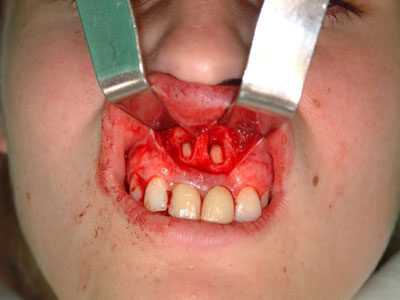

CIRUGIA APICAL
Se realiza normalmente en los incisivos centrales, incisivos laterales y caninos, tanto del maxilar superior como de la mandíbula, y también en premolares inferiores.
DENTIMAX
"Es verdad que optamos por la risa en casi todas las situaciones, con excepción de una que otra visita al dentista"